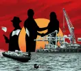

){kind=link}
){kind=link}
){kind=link}
){kind=link}
){kind=link}
){kind=link}
){kind=link}
){kind=link}
){kind=link}
){kind=link}
){kind=link}
){kind=link}
){kind=link}
){kind=link}
){kind=link}
){kind=link}
){kind=link}
){kind=link}
){kind=link}


Medio millón de acciones del puerto de Buenaventura en manos de
un narcO Y SU FAMILIA
Adaptación de contaminación del buque Cap San Tainaro de Maersk con cocaína. Crédito: Equipo Cuestión Pública.
Documentos filtrados de la Fiscalía muestran que sus embarcaciones, las siglas de sus contenedores y los muelles de llegada de estas compañías en Europa son mencionados por criminales para hablar en clave sobre envíos y rutas de cocaína.
Con 73 mil y 48 mil kilos de droga incautados en sus buques y contenedores, respectivamente, las gigantes europeas son las más usadas por el crimen organizado. Juntas suman casi la mitad del alcaloide incautado vinculado al tráfico marítimo internacional entre 2016 y abril de 2022. Así lo identificaron Cuestión Pública y OCCRP tras la construcción de una base de datos única que consolidó y cruzó información de cuatro fuentes oficiales en Colombia y una en Bélgica.
Durante un año, esta alianza periodística rastreó 431 decomisos de 265 toneladas de cocaína colombiana, casi el doble de lo que pesa la Estatua de la Libertad. Allí encontró que estas navieras también lideran en el número de incautaciones: Maersk aparece en 134 casos, seguida por CMA-CGM con 67.
Las contaminaciones con estupefacientes en su línea de transporte fueron tan recurrentes que casi cada mes desde 2016 y hasta abril de 2022 cayó un cargamento en alguna de estas dos navieras, que hacen parte de las cinco compañías marítimas más importantes del mundo. Las cifras de incautaciones contrastan, en buena parte, con la participación de las dos multinacionales en el mercado colombiano: entre 2016 y 2021 la danesa Maersk, tuvo el 33 % y la francesa CMA-CGM, el 11 %, de acuerdo con datos de Sicex, una plataforma de inteligencia de mercado.
A través de una amplia filtración de correos de la Fiscalía colombiana, esta alianza encontró documentos de interceptaciones y testimonios de integrantes de organizaciones criminales, quienes piden tanto de manera explícita como “en clave” usar los servicios de ambas para exportar la droga.
En enero de 2022, un informante de la Fiscalía, que antes prestaba sus servicios como buzo para un cartel mafioso del Caribe colombiano, explicó que la organización de la que era miembro exigía que las cargas que salían desde Barranquilla y otras ciudades llegaran a los terminales de Maersk en Europa.
“Hay una gente que está buscando enviar de 30 o 40 kilos de cocaína al puerto de Amberes, Bélgica, exactamente a la terminal 188 y 234, donde llegan contenedores con banano de Maersk Line. Ellos [los socios europeos] quieren que la mercancía vaya en los ojitos del buque, es decir, en los motores de los aires acondicionados o en el espejo, que es la parte del fondo del contenedor, porque en esos lugares caben entre 40 a 100 kilos de cocaína”. Este testimonio quedó consignado en un informe técnico del ente de control.
Adaptación de contaminación del buque Cap San Tainaro de Maersk con cocaína con buzos profesionales. Crédito: Equipo Cuestión Pública.
El muelle 188 reportó tres incautaciones que sumaron 1.580 kilos de cocaína en 2019, de acuerdo con la información suministrada por las autoridades belgas a Cuestión Pública y OCCRP. Dos de ellas llegaron en cargamentos de bananos y se realizaron en buques de Maersk.
Los terminales 188 y 234 del puerto de Amberes también son los favoritos de otro grupo criminal asentado en Santa Marta, según documentos de la Fiscalía. En 2021, las autoridades obtuvieron la información mediante interceptaciones telefónicas legales realizadas a dicha estructura, cuya droga era producida en Norte de Santander.
Algunos de sus integrantes, conocidos con los alias de Juancho, Joche y Alex, se refirieron en clave a las exportaciones de cocaína mediante el uso de dos de las siglas que identifican los contenedores de Maersk a nivel global: MMAU y MNBU .Estos prefijos están registrados como propiedad de la compañía ante el Buró Internacional de Contenedores (BIC).
Apartes de interceptaciones legales realizadas por la Fiscalía entre noviembre y diciembre de 2021 a una organización que coordinaba envíos de droga en contenedores de Maersk. Crédito: Fiscalía General.
En una de esas llamadas, Alex indica que “(...) todo lo que sea por Antwerp [Amberes] tiene que ser por MMAU (SP) bodega 188 ” y que quienes pagan por los envíos de la droga “no quieren 1700 [otra bodega del puerto, a la que llegan los buques de CMA-CGM], quieren la 234 [de Maersk]”. En otra charla, alguien interrumpe una conversación entre Joche y Juancho para afirmar que los cargamentos “siempre salen por MNBU”.
El 30 de agosto de 2018, un cargamento de banano de las compañías C.I. Coindex S.A. y Bensa Global Trading fue incautado en el muelle 188 del puerto de Amberes con 3,4 toneladas de cocaína. La droga iba en el contenedor MNBU 031563-4, en el buque Cap Beatrice de Maersk.
De los 53 mil 481 kilos de cocaína decomisados en contenedores de la naviera danesa desde 2016, los identificados con esas dos siglas corresponden a más de la mitad del total de la droga incautada (58 %): 10 mil 154 en MMAU y cerca de 21 mil kilos en MNBU, según la base de datos construida por Cuestión Pública.
En otros países, las sospechas sobre la preferencia de la naviera por parte de los narcotraficantes para exportar droga son de tal magnitud que, según reveló el diario danés Finans, “Maersk” y “cocaína” están entre las palabras elegidas por la policía holandesa para acceder a conversaciones cifradas entre delincuentes en el servicio de mensajería Sky ECC.
En Costa Rica, el exministro de seguridad, Álvaro Ramos, señaló a esta alianza periodística que tras la adjudicación en 2011 de la concesión del puerto marítimo de Moín a APM Terminals, compañía del grupo Maersk, notaron un aumento significativo del tráfico de drogas.
“Con la llegada de [APM a Puerto Moín] se dio una posibilidad muy alta al gran narcotráfico internacional para que usara la facilidad portuaria y se notó una expansión muy grande hacia Europa Occidental y un poco hacia Estados Unidos. Empezamos a recibir informes de que de ese puerto llegaban [estupefacientes] a Róterdam, Sevilla y a otros puertos de Europa”.
Consultada sobre la declaración del exministro Ramos, Maersk señaló que “en ese puerto, APM Terminals ha seguido sistemáticamente las indicaciones de las autoridades locales, y hemos instalado tres escáneres de contenedores para que operen las fuerzas de seguridad locales, y seguimos apoyando los esfuerzos donde se nos requiera”.
Para llegar a estos hallazgos, se cruzaron datos de diferentes fuentes de información: Fiscalía, Armada, Ministerio de Defensa y Policía de Colombia, autoridades de Bélgica, bases de exportaciones como Panjiva e ImportGenius, y registros en medios de comunicación nacionales e internacionales.
Los casos se establecieron a partir de la cantidad de droga, el lugar y la fecha de decomiso, lo que reveló inconsistencias en los registros llevados por las diferentes autoridades colombianas e incautaciones que no fueron reportadas.
Tras esta búsqueda, se encontraron 22 hechos en documentos reservados de la Fiscalía que no fueron reportados por ninguna otra autoridad nacional. Ni siquiera fueron enumerados por el mismo ente de control en una respuesta oficial que entregó a estos medios.
Crédito: Cuestión Pública con diseño de Daniel Nicolalde
El 14 de junio de 2020, en pleno brote de Covid-19, fueron incautados 2.500 kilos de cocaína en Cartagena, de acuerdo con un informe de la Fiscalía. La droga iba escondida en bultos de panela pulverizada en el contenedor CMAU 634975-6 de la naviera francesa CMA-CGM, que iba a ser cargado en la motonave Cristina Star, de la misma compañía. Sin embargo, por problemas de capacidad, el contenedor resultó partiendo a bordo del buque Dublin Express, propiedad de Hapag-Lloyd.
La mercancía había sido exportada por la empresa colombiana Serendipia Group y la importadora era Zurkum Business, registrada en la ciudad española de Valencia y representada por el venezolano José Alejandro Sierra Troncoso, alias “Chepe”, líder de la organización criminal en Europa. Aunque Sierra señaló que su compañía trabajaba para la cadena de supermercados Carrefour, documentos de la Fiscalía sobre este caso concluyeron que en realidad se trataba de una empresa fachada creada para facilitar el tráfico de drogas.
Ajustar pie de foto: Comunicación entre integrantes del grupo criminal identificado como Perlas Negras, obtenida por la Fiscalía, en la que coordinaban envíos de droga que involucran contenedores de CMA. Crédito: Fiscalía General.
La droga debía transportarse en esta naviera, según lo explicó Sierra Troncoso, en un correo electrónico enviado a su socio colombiano, Juan Sebastián Quiceno Calderón, representante legal de Serendipia Group. Ambos coordinaban varios envíos, entre ellos, las dos toneladas de cocaína que cayeron en Cartagena, donde el buque hacía tránsito antes de partir al puerto de Le Havre, en Francia, su lugar de desembarco.
“En principio mi cliente comprador solo acepta CMA como naviera, por las condiciones de sus equipos y por razones internas de ellos, cosa que no puedo yo llevarles la contraria por el mismo hecho que es el Cliente que tiene la zaon [razón] como dice el dicho. Por lo que por favor necesitamos estos envíos se hagan por medio de CMA (sic)”.
Un mes antes de ese correo y después de recibir exitosamente en Valencia dos cargas de panela pulverizada mezcladas con cocaína en marzo, según la Fiscalía colombiana, alias Chepe le pidió a los dueños de Serendipia que “los próximos contenedores fueran enviados en tamaño más grande, es decir de 40 pies, con el pretexto que la mercancía tuviera mejor ventilación”.
Imágenes de la incautación de casi dos toneladas de cocaína en abono orgánico el 26 de noviembre de 2019. Crédito: Fiscalía General.
El contenedor de CMA en el que se confiscaron las dos toneladas de cocaína era de 40 pies. Una posible explicación de por qué el grupo criminal prefería estos tamaños para mandar la droga la entregó en el informe judicial el investigador de campo, a quien se reservó el nombre por seguridad.
“De acuerdo a mi conocimiento y a la modalidad de contaminación que utilizó la organización criminal, la solicitud de aumento del tamaño del contenedor obedecería a la facilidad que tendrían para el desembalaje de la mercancía en el momento de efectuar la contaminación con sustancia estupefaciente en tránsito”, señaló el investigador.
Desde el pacífico colombiano, una organización criminal coordinó con uniformados la salida de cuatro toneladas y media de cocaína, que fueron transportadas en buques o contenedores de la naviera francesa CMA-CGM, entre 2019 y 2020.
En 2023, la Fiscalía desarticuló a esta organización criminal transnacional identificada como “Perlas Negras” que operaba en Buenaventura y Valencia, España, y que trató de exportar sin éxito seis toneladas de cocaína a Europa entre 2019 y 2020. Aunque seis de los integrantes de dicho grupo fueron capturados en España en 2021, el proceso penal fue sobreseído provisionalmente, es decir, cerrado por falta de pruebas, desde febrero de 2022, según indicó a esta alianza el Juzgado de Instrucción 16 de Valencia.
La droga incautada en CMA-CGM viene del pacífico colombiano, de acuerdo con los datos compilados por esta alianza periodística. Uno de cada cinco decomisos que involucraron buques y contenedores de la naviera ocurrió en Buenaventura, el puerto más importante de la región.
Lejos de esa ciudad, en la otra costa del país, y sin que guardaran relación, otra organización identificada como Perla Negra, en singular, y al servicio del Clan del Golfo en el Caribe, envió cerca de 15 toneladas al viejo continente entre 2017 y 2018, usando a Maersk como naviera.
Dicho grupo traficó 7,5 de cada 10 kilos del alcaloide, principalmente desde el Puerto de Santa Marta. Casi la mitad (el 47 %) de las incautaciones en buques y contenedores de la compañía danesa ocurrieron en esa sociedad portuaria.
Oficiales de inteligencia militar y policías, en red con el principal de Daniel “El Loco” Barrera, enviaron 19 toneladas de cocaína hacia Centroamérica, EE.UU. y Europa; corrompieron a inspectores del puerto de Santa Marta para embarcar el 70 % de la droga en la naviera danesa.
Allí tiene gran injerencia el Clan del Golfo desde hace varios años, según afirmó un investigador del Centro Internacional de Investigación y Análisis contra el Narcotráfico Marítimo Internacional (CMCON), que habló con Cuestión Pública y OCCRP bajo anonimato.
Así lo confirmó el vicealmirante Orlando Grisales Franceschi, Jefe De Estado Mayor Naval de Operaciones de la Armada Nacional de Colombia, a esta alianza:
“los puertos marítimos de Santa Marta son un punto clave para la exportación de cocaína hacia puertos europeos, que en su mayoría viene oculta en carga contenerizada de fruta como el banano y la piña. Por otra parte, la infiltración de organizaciones criminales en puertos y autoridades locales permite que el tráfico de drogas opere con relativa impunidad”.
De acuerdo con los datos recabados durante esta investigación, Bélgica se ha mantenido como el país favorito para la entrada de la droga a Europa, pues registra 26 casos de cocaína incautada proveniente de Colombia desde 2016, para un total de 27 toneladas en el puerto de Amberes.
De este puerto, las organizaciones criminales conocen en detalle los muelles exactos en los que atracan los buques de cada naviera. Además del 188 y el 234, donde llega Maersk, esta alianza encontró referencias por parte de grupos criminales al muelle 1700, asignado a CMA-CGM, en documentos de la Fiscalía. En 2019, según datos de las autoridades belgas, en este último muelle desembarcaron tres buques contaminados con 2.701 kilos de cocaína, de los cuales dos eran de CMA-CGM.
Apartes de interceptaciones legales realizadas por la Fiscalía a distintas organizaciones criminales. Crédito: Fiscalía General.
Los narcos también muestran cierta preferencia sobre productos o compañías al momento de realizar contaminaciones. Según la base de datos construida en esta investigación, el récord de decomisos de droga lo tiene Banasan, una de las mayores exportadoras de banano del país. La empresa está vinculada a 37 decomisos que suman 4,7 toneladas de cocaína en Colombia, Alemania y Bélgica entre 2016 y 2022. Todas ocurrieron en buques o contenedores de Maersk.
Armando Lacouture, abogado y portavoz de la exportadora, señaló que "Banasan es la principal víctima de esta actividad criminal" y que se trata “de una cifra insignificante frente a los 13 mil contenedores que exporta al año hacia Europa”, su único destino. Agregó que tienen una política de lavado de activos, seguimiento GPS de los camiones donde se transporta la fruta, entre otros controles.
Para Henrik Vigh, profesor de la Universidad de Copenhagen y experto en crimen organizado, "los narcos se centran en las terminales portuarias, donde el ritmo es alto, para poder enviar sus mercancías rápidamente. Esto afecta especialmente a los muelles que manipulan alimentos. En estos, a las autoridades les resulta complicado detener el flujo de contenedores si sospechan de contrabando, porque los alimentos se pudren y se corre el riesgo de interrumpir la cadena de transporte."
El abogado agregó que hasta ahora no ha habido investigaciones contra directivos de Banasan por narcotráfico y aclaró que la naviera la eligen los clientes internacionales que les compran la carga.
Adaptación de contaminación del buque Cap San Tainaro de Maersk con cocaína con buzos profesionales. Crédito: Equipo Cuestión Pública.
De acuerdo con documentos de la Fiscalía, la escogencia de la naviera pareciera estar a cargo de los narcos europeos, encargados de recoger la droga en los puertos de llegada. Interceptaciones legales hechas por el ente de control muestran que esta práctica la siguen organizaciones criminales que operan en Buenaventura y Barranquilla, y que una vez se conoce el lugar de llegada, se empieza a coordinar la logística del envío de la cocaína.
En los últimos años, navieras como Maersk y CMA-CGM han apostado por diversificar su portafolio empresarial hacia la totalidad de la cadena logística del comercio internacional: desde la recogida de la carga en la bodega de origen, el servicio de agencia aduanera, el transporte en sus contenedores y el envío en sus buques, hasta la entrega en el lugar de destino.
El profesor Henrik Vigh comentó que un modelo de negocio como el de Maersk “se adapta perfectamente a los narcos, que prefieren que haya el menor número posible de eslabones en la cadena. Cuantas menos veces tengan que cambiar de manos las mercancías, menor es el riesgo de ser controladas y descubiertas. Introducirlas en una empresa que cubra toda la cadena logística es una clara ventaja para ti como cartel”.
Pese a que las principales navieras ofrecen servicios similares, el caso de Maersk es excepcional. A través de su filial APM Terminals, participa mayoritariamente en la Sociedad Portuaria Terminal de Contenedores de Buenaventura (TCBuen) y en otras terminales en Costa Rica, Brasil y Panamá. Además, tiene operadores logísticos como Maersk Logistics y Servicios Colombia, servicios de aduanas en Europa como KGH (ahora Maersk Customs Services), y una de las redes de contenedores y buques más grandes del mundo.
Consultada por esta alianza, la multinacional danesa señaló que el gran número de incautaciones en sus contenedores y embarcaciones suele ser el resultado de una buena y proactiva colaboración entre las autoridades y el sector. Agregó que usa escáneres de contenedores en sus terminales de mayor riesgo y explora el uso de dispositivos de seguimiento de contenedores, así como el uso de inteligencia artificial para envíos sospechosos.
Jan Janse, jefe de distrito de la Policía Portuaria de Rotterdam, Países Bajos, señaló que si bien "todas las navieras que conocemos no están implicadas criminalmente en el tráfico de drogas, (...) me atrevo a decir que cada una tiene gente corrupta trabajando para ellas".
Entrevista a Jan Jensen, jefe de distrito de la Policía Portuaria de Rotterdam, Países Bajos. Interrogado por la periodista Pavla Holcova del medio checo Investigace, para NarcoFiles.
En 2023, directivos de MSC, Maersk, CMA-CGM, Hapag-Lloyd y Seatrade firmaron una declaración sobre la lucha contra el narcotráfico transnacional con los gobiernos belga y Neerlandés. Dentro de los compromisos estaba intercambiar información e implementar mejoras en la verificación de antecedentes de su personal.
No obstante, ni la naviera, ni los contenedores contaminados, ni los tripulantes de las embarcaciones, ni tampoco las empresas que les sirven de camuflaje a los narcotraficantes son objeto de pesquisas por parte de las autoridades en la mayoría de los casos, de acuerdo con los documentos judiciales obtenidos por Cuestión Pública y OCCRP.
Juan Alberto Páez, director ejecutivo de la Asociación Nacional de Navieros y Agentes Marítimos (ASONAV), señaló a esta alianza que "las empresas marítimas son víctimas del narcotráfico (...) Las estadísticas [de toneladas de droga incautadas en navieras] podrían demostrar un compromiso activo de colaboración con las autoridades".
Por su parte, la naviera francesa le contestó a esta alianza que “la lucha contra todo tipo de tráfico ilícito es una prioridad absoluta para el Grupo CMA-CGM, igual que para toda la industria naviera”. Aseguró que colabora estrechamente con las autoridades policiales, aduaneras y judiciales de todos los países para combatir ese tipo de tráfico y que por la seguridad de su equipo y su operación “no hace más comentarios al respecto”.
Hasta ahora, no se conoce ningún país que haya analizado abiertamente el rol de las navieras en el combate al narcotráfico. Estados Unidos lo hizo en una única ocasión con el buque Gayane de la naviera MSC, en el que se encontraron 19 toneladas de droga el 17 de junio de 2019, la mayor incautación en un portacontenedores en la historia. Recientemente, voces aisladas como Jan Janse y la fiscal antidrogas de España, Rosa Ana Morán, han llamado la atención sobre el papel de las transportadoras.
El profesor Henrik Vigh, explicó que “si se interviene y se restringe la libre circulación de mercancías, se corre el riesgo de crear rápidamente problemas en la cadena de suministro. Si, por ejemplo, se empieza a controlar más intensamente los buques y contenedores o a regular excesivamente los puertos, se corre el riesgo de ralentizar el comercio mundial”.
El experto colombiano del CMCON, que agrupa a 12 países y tiene a su cargo el estudio del tráfico interoceánico de drogas, admitió a esta alianza que el equipo estudia 200 variables diferentes como la sustancia ilícita, el grupo criminal o la modalidad de contaminación, pero no incluye a las empresas dueñas de los buques y contenedores objeto de presuntas contaminaciones.
Y es que, según el mexicano Bernardo Gómez Del Campo, el problema más serio en la persecución del narcotráfico es la mirada “desactualizada” frente a los desafíos: “ahora tenemos una generación de empresarios criminales que trabajan con mercancía legal, pero también ilícita. La diferencia es que lo hacen como empresarios formados y lo que está fallando es la investigación criminal corporativa a las navieras”.
*Cuestión Pública consolidó una base datos única sobre incautaciones de droga colombianas entre 2016 y abril de 2022, la cual recopila estadísticas del Ministerio de Defensa, la filtración de correos de la Fiscalía General de la Nación, la Armada Nacional, la Policía de Colombia y el Departamento Federal de Finanzas de Bélgica.
Lee nuestra metodología de investigación de datos aquí.
Lee aquí la versión en inglés de esta publicación realizada por OCCRP
(Organized Crime and Corruption Reporting Project).